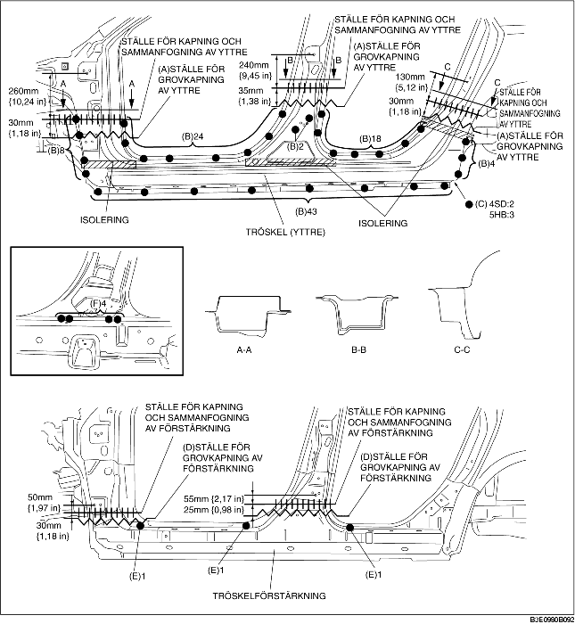

1. Grovkapa område (A), borra de 99 punkter som markeras med (B), de 2 punkter (4SD) eller 3 punkter (5HB) som markeras med (C), och demontera sedan tröskeln (yttre).
2. Grovkapa område (D) och borra de 3 punkter som markeras med (E).
3. Borra de 4 punkter som markeras med (F) inifrån och demontera tröskelförstärkningen.
